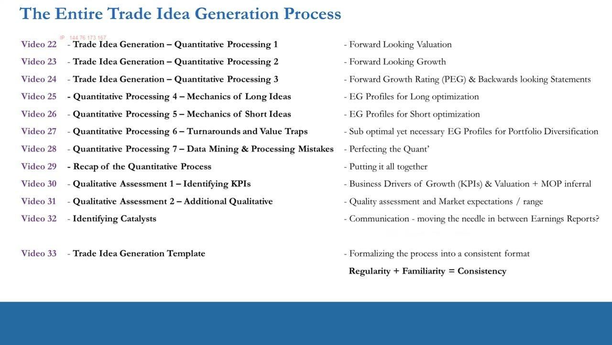
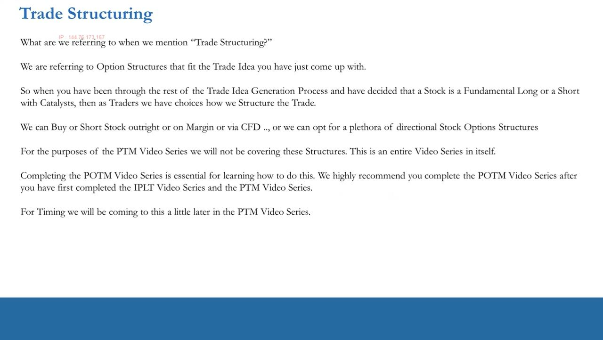
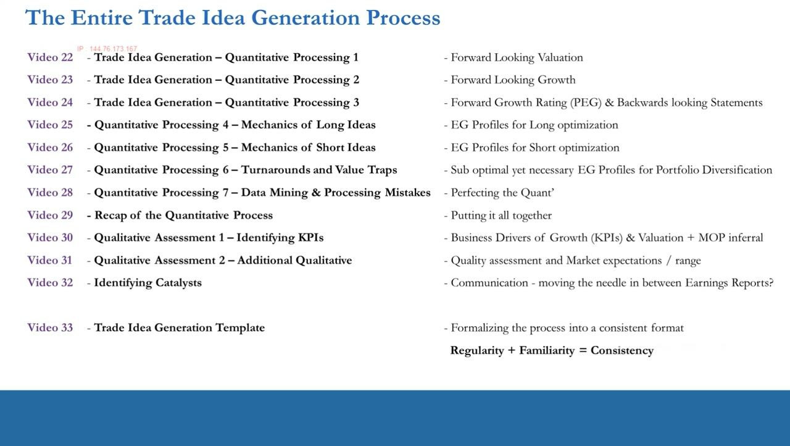
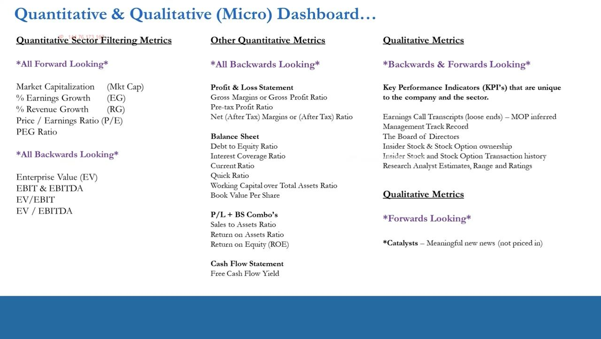
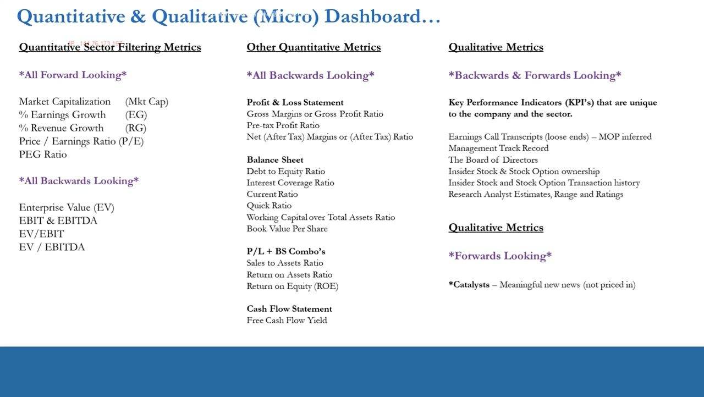
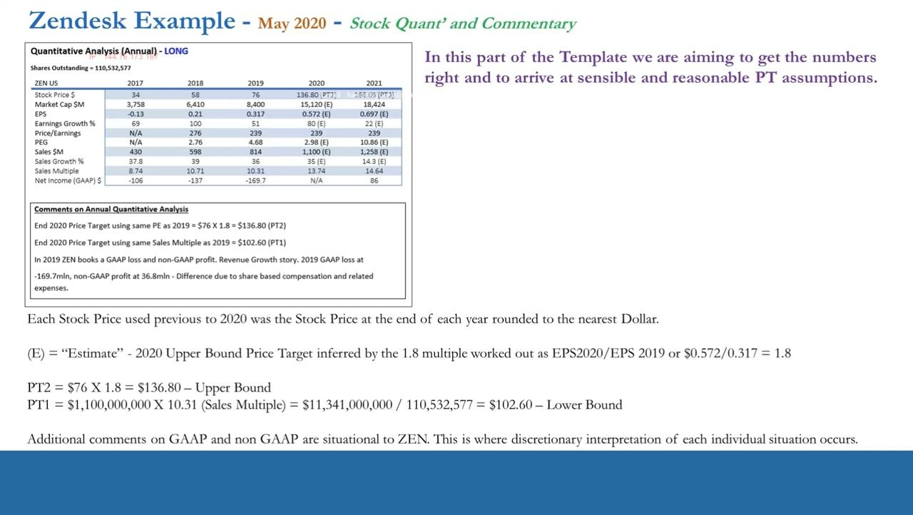

Trade Idea Generation Template — Part 1
How to formalize the whole 22–33 idea-generation flow into one disciplined, repeatable template — and use it to pin down the numbers and price targets.
A fundamental long or short is not a trade idea until it has catalysts and a structure. This lesson pulls the entire quantitative + qualitative process into a single Trade Idea Template and walks the Zendesk (ZEN) May-2020 case so you can arrive at sensible price-target assumptions the same way every time.
The gist
- Why a template at all: it is about discipline and consistency — Regularity + Familiarity = Consistency, and consistency in process leads to consistency in returns.
- A fundamental long or short is NOT a fully-formed trade idea yet; it becomes one only once you add catalyst identification and a trade structure.
- Trade structuring choices: outright stock (1-for-1, no leverage), on margin (US 50% overnight requirement ≈ 2-for-1), CFD (up to 5x, realistically ~4x on average), or directional stock-options structures — options are deferred to the POTM series; PTM ends in a long/short stock position.
- The template consolidates videos 22–33 into one flow, split across a Quantitative & Qualitative (Micro) Dashboard: forward-looking sector filters (Mkt Cap, %EG, %RG, P/E, PEG), backward-looking valuation (EV, EBIT/EBITDA, EV/EBIT, EV/EBITDA), P&L margins, balance-sheet ratios, cash-flow, then the qualitative half (KPIs/MOP, earnings-call transcripts, management, board, insider ownership + transactions, analyst estimates/range/ratings, and Catalysts).
- Part-1's job: get the numbers right and arrive at sensible, reasonable price-target (PT) assumptions — not exact science, but accurate and reasonable.
- Zendesk (ZEN) May-2020 is a revenue-growth story, not an earnings-growth story: 2019 GAAP loss of −$169.7M vs non-GAAP profit of $36.8M, the difference due to share-based compensation and related expenses — so the work is done on the positive non-GAAP EPS.
- Upper-bound PT = $76 × 1.8 = $136.80, where 1.8 = EPS2020/EPS2019 = $0.572 / $0.317 (≈80% earnings growth, holding the ~239 P/E constant).
- Lower-bound PT ≈ $102.60 = $1.1bn 2020 sales × 10.31 (2019 sales multiple) = $11,341,000,000 ÷ 110,532,577 shares outstanding — the more realistic target for a revenue-growth name.
Why bother with a template at all
- It comes down to discipline and consistency — the template turns the whole idea-generation process into a formal checklist you run for every single idea.
- The motto on the slide: Regularity + Familiarity = Consistency.
- The more you fill it out, the more familiar and better you get — and even once you are good, you keep doing it out of discipline, on repeat, forever.
- Consistency in process leads to consistency in returns.
The template is not busywork — it is the mechanism that makes the process repeatable. Anton frames discipline as the bridge between a good process and a consistent P&L: you formalize the process into a consistent format so the outputs become consistent too.

A fundamental long/short is not yet a trade idea
- Trade idea generation is not just fundamentals: it is fundamentals + timing + trade structure around catalysts.
- After the first part of the process you have a fundamental long or short — but it is not a full trade idea until you add catalyst identification, which then biases your trade structure.
- Timing is another ingredient of the overall process and is covered later in the PTM series.
This lesson sits inside the ProTrader Systematic Process: long/short portfolio management on a 20-to-60-day horizon. A fundamental view is only the starting point — catalysts and structure are what turn it into something tradeable.

What trade structuring actually means
- Trade structuring = the options structures that fit the trade idea you have just generated.
- Once a stock is a fundamental long/short with catalysts, you have choices: buy/short stock outright (1-for-1, cash-for-stock, no leverage).
- On margin — e.g. the US 50% overnight margin requirement leverages you two-for-one.
- Via CFD (international access) — a derivative, up to 5x leverage right now, but more realistically ~4x on average.
- Or a plethora of directional stock-options structures (accessible to both US and international traders).
- Options structures are NOT covered here — they are an entire series in themselves, taught in the POTM (Professional Options Trading Masterclass). PTM assumes you end in a long or short stock position, outright, on margin, or via CFD.
Anton cements the definition so it does not get muddled later. The key point for PTM: everything in this series culminates in a long/short stock position; the option-structure layer is deferred to POTM.
The entire trade idea generation process (videos 22–33)
- Video 22 — Quantitative Processing 1: Forward-Looking Valuation.
- Video 23 — Quantitative Processing 2: Forward-Looking Growth (earnings growth, revenue growth).
- Video 24 — Quantitative Processing 3: Forward Growth Rating (PEG) & backwards-looking statements.
- Videos 25–26 — Mechanics of Long Ideas / Short Ideas: earnings-growth profiles for long vs short optimization.
- Video 27 — Turnarounds and Value Traps: sub-optimal yet necessary EG profiles for portfolio diversification.
- Video 28 — Data Mining & Processing Mistakes (perfecting the quant); Video 29 — recap, putting it all together.
- Videos 30–31 — Qualitative Assessment: identifying KPIs (business drivers + MOP inferral), then quality assessment and market expectations/range.
- Video 32 — Identifying Catalysts: communication that moves the needle between earnings reports.
- Video 33 — this template: formalizing the whole process into a consistent format.
The template is the destination of the entire 22–33 arc. Everything you learned in those videos goes into it for every idea. (Macro / leading-indicator ideas mainly set the portfolio bias, but can also seed some ideas for diversification.)

The Quantitative half of the (Micro) Dashboard
- Forward-looking sector-filtering metrics: Market Capitalization (Mkt Cap), % Earnings Growth (EG), % Revenue Growth (RG), Price/Earnings (P/E), PEG Ratio.
- Backward-looking valuation: Enterprise Value (EV), EBIT & EBITDA, EV/EBIT, EV/EBITDA.
- P&L (backward-looking): Gross Margins/Gross Profit Ratio, Pre-tax Profit Ratio, Net (After-Tax) Margins/Ratio.
- Balance Sheet: Debt-to-Equity, Interest Coverage, Current Ratio, Quick Ratio, Working Capital over Total Assets, Book Value Per Share.
- P/L + BS combos: Sales-to-Assets, Return on Assets, Return on Equity (ROE); Cash Flow: Free Cash Flow Yield.
The quantitative half is how you filter at the sector level and drill down to positive and negative outliers. Forward metrics identify candidates; the backward-looking valuation, margin, balance-sheet and cash-flow blocks are the supporting evidence.

The Qualitative half of the (Micro) Dashboard
- Key Performance Indicators (KPIs) unique to the company and sector — the business drivers of growth and valuation, from which the MOP (Management Operating Plan) is inferred.
- Earnings-call transcripts (tying up loose ends, MOP inferred), management track record, and the board of directors.
- Insider stock & stock-option ownership, plus insider transaction history.
- Research analyst estimates, the range, and the ratings.
- Catalysts — meaningful new news that is not priced in — the essential ingredient that turns a fundamental view into a trade idea.
You do qualitative work on the outliers surfaced by the quant. Catalysts are the forward-looking piece that defines a trade idea; without them you still only have a fundamental long or short.

Part-1's job: get the numbers right, arrive at sensible PTs
- The aim of this first part of the template: get the numbers right and arrive at sensible, reasonable price-target (PT) assumptions.
- The 'E' in the table denotes forward-looking estimates; stock prices before 2020 were taken at each year-end and rounded to the nearest dollar.
- This is not an exact science — the goal is to be as accurate as possible and make reasonable assumptions so you can derive an expected stock-price move and the parameters you are operating in.
- A commentary block under the table spells out what type of trade this is and lists the price targets, because the PTs are inferred from the quantitative data (growth + valuation).
Part 1 is about pinning the quantitative picture and turning it into bounded price targets. The example that follows shows how the same P/E and same sales-multiple assumptions produce an upper and a lower bound.

Worked example — Zendesk (ZEN), May 2020
- Shares Outstanding = 110,532,577. ZEN is a LONG idea, and a revenue-growth story rather than an earnings-growth story.
- 2019: GAAP loss of −$169.7M vs non-GAAP profit of $36.8M — the difference is share-based compensation and related expenses; the work is done on the positive non-GAAP EPS.
- Table (2017 / 2018 / 2019 / 2020 / 2021): Stock Price $34 / $58 / $76 / $136.80 (PT2) / $166.09 (PT3); EPS −0.13 / 0.21 / 0.317 / 0.572 (E) / 0.697 (E); Earnings Growth % 69 / 100 / 51 / 80 (E) / 22 (E); P/E N/A / 276 / 239 / 239 / 239.
- Sales $M 430 / 598 / 814 / 1,100 (E) / 1,258 (E); Sales Growth % 37.8 / 39 / 36 / 35 (E) / 14.3 (E); Sales Multiple 8.74 / 10.71 / 10.31 / 13.74 / 14.64; Net Income (GAAP) $M −106 / −137 / −169.7 / N/A / 86.
- Upper-bound PT (PT2) = $76 × 1.8 = $136.80, where 1.8 = EPS2020/EPS2019 = $0.572 / $0.317 (holding the ~239 P/E constant, ≈80% earnings growth) — a bullish upper bound.
- That $136.80 × 110,532,577 shares implies an end-2020 market cap of ~$15.1bn, and ÷ $1.1bn sales gives an upper-bound 2020 sales multiple of 13.74.
- Lower-bound PT (PT1) ≈ $102.60 = $1,100,000,000 × 10.31 (2019 sales multiple held constant) = $11,341,000,000 ÷ 110,532,577 shares — the more realistic target for a revenue-growth name.
The two bounds come from two constant-assumption methods: hold the P/E constant off forward EPS for the bullish upper bound, and hold the sales multiple constant off forward sales for the more realistic lower bound. GAAP vs non-GAAP handling is situational to ZEN and is where discretionary interpretation of each individual case occurs.
Glossary
- Trade Idea TemplateThe Word-document checklist (downloadable with video 33) that formalizes the entire 22–33 idea-generation process into one consistent format, filled out for every idea.
- Trade structuringThe options structures that fit a trade idea; more broadly the choice of how to take the position — outright stock, on margin, via CFD, or via directional options.
- Regularity + Familiarity = ConsistencyAnton's motto for the template: running the same process on repeat builds familiarity, and consistency in process leads to consistency in returns.
- Micro DashboardThe combined Quantitative & Qualitative dashboard — forward and backward sector filters plus KPIs, management, insiders, analysts, and catalysts.
- CFDContract for Difference — a derivative (not the underlying stock) available to international traders, offering up to 5x leverage, realistically ~4x on average.
- US 50% marginThe US overnight margin requirement that lets you leverage a stock position roughly two-for-one.
- Price Target (PT)An inferred stock-price destination derived from the quantitative data; here bounded by an upper (constant P/E) and lower (constant sales multiple) estimate.
- GAAP vs non-GAAPReported earnings under standard accounting (GAAP) vs adjusted figures excluding items like share-based compensation (non-GAAP); ZEN's 2019 GAAP loss of −$169.7M vs non-GAAP profit of $36.8M.
- Sales multipleMarket cap divided by sales (price-to-sales); ZEN's 2019 multiple of 10.31, held constant, produces the lower-bound PT.
- POTMProfessional Options Trading Masterclass — the separate series where the directional options structures deferred from PTM are taught.